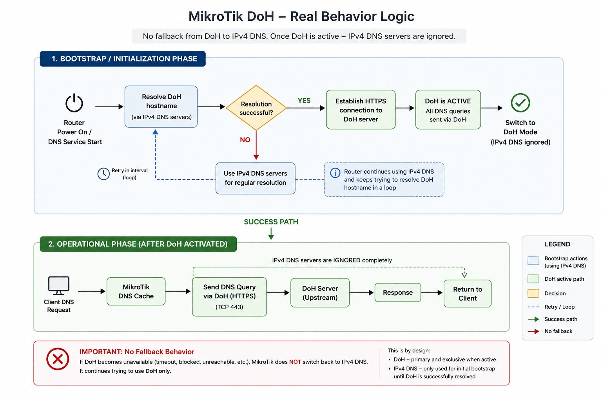

DNS over HTTPS (DoH)
Good official doc: https://manual.mikrotik.com/docs/network-management/dns#dns-over-https-doh

Fast DoH setup
Caution
- allow-remote-requests=yes is mandatory to use MikroTik as DNS server
- all peer DNS must be disabled
- there is no auto-fallback from DoH to IPv4/IPv6 servers!
Danger
Import DoH-required certificates before setting DoH resolver, instruction here
Setup commands
# RoS 7.23
# disable peer dns
/ip dhcp-client
set use-peer-dns=no numbers=0
/interface lte apn
set [ find default=yes ] use-peer-dns=no
# enable built-in CAs
/certificate settings set builtin-trust-store=all
/ip dns
set allow-remote-requests=yes \
cache-max-ttl=1d \
servers=8.8.8.8,1.1.1.1 \
use-doh-server=https://dns.google/dns-query \
verify-doh-cert=yes
# forward all DNS requests to MikroTik itself
/ip firewall nat
add action=redirect chain=dstnat \
comment="Incoming DNS redirect" \
dst-address-type=!local \
dst-port=53 \
in-interface-list=LAN \
protocol=udp
add action=redirect chain=dstnat \
comment="Incoming DNS redirect" \
dst-address-type=!local \
dst-port=53 \
in-interface-list=LAN \
protocol=tcp
How To Check DoH is working
# RoS 7.23
/tool/sniffer/quick port=443 ip-address=8.8.8.8
Columns: INTERFACE, TIME, NUM, DIR, SRC-MAC, DST-MAC, SRC-ADDRESS, DST-ADDRESS, PROTOCOL, SIZE, CPU
INTERFACE TIME NUM DIR SRC-MAC DST-MAC SRC-ADDRESS DST-ADDRESS PROTOCOL SIZE CPU
ether1 13.06 37 <- 9C:69:B4:66:DB:BC F4:1E:57:29:00:BB 8.8.8.8:443 (https) 10.185.95.186:46666 ip:tcp 135 1
ether1 13.06 38 -> F4:1E:57:29:00:BB 9C:69:B4:66:DB:BC 10.185.95.186:46666 8.8.8.8:443 (https) ip:tcp 66 1
ether1 13.061 39 -> F4:1E:57:29:00:BB 9C:69:B4:66:DB:BC 10.185.95.186:46666 8.8.8.8:443 (https) ip:tcp 119 2
ether1 13.061 40 -> F4:1E:57:29:00:BB 9C:69:B4:66:DB:BC 10.185.95.186:46666 8.8.8.8:443 (https) ip:tcp 122 2
ether1 13.061 41 -> F4:1E:57:29:00:BB 9C:69:B4:66:DB:BC 10.185.95.186:46666 8.8.8.8:443 (https) ip:tcp 104 2
ether1 13.061 42 -> F4:1E:57:29:00:BB 9C:69:B4:66:DB:BC 10.185.95.186:46666 8.8.8.8:443 (https) ip:tcp 177 2
ether1 13.061 43 -> F4:1E:57:29:00:BB 9C:69:B4:66:DB:BC 10.185.95.186:46666 8.8.8.8:443 (https) ip:tcp 142 2
ether1 13.087 44 <- 9C:69:B4:66:DB:BC F4:1E:57:29:00:BB 8.8.8.8:443 (https) 10.185.95.186:46666 ip:tcp 66 1
ether1 13.087 45 <- 9C:69:B4:66:DB:BC F4:1E:57:29:00:BB 8.8.8.8:443 (https) 10.185.95.186:46666 ip:tcp 104 1
ether1 13.087 46 -> F4:1E:57:29:00:BB 9C:69:B4:66:DB:BC 10.185.95.186:46666 8.8.8.8:443 (https) ip:tcp 66 1
ether1 13.087 47 <- 9C:69:B4:66:DB:BC F4:1E:57:29:00:BB 8.8.8.8:443 (https) 10.185.95.186:46666 ip:tcp 66 1
ether1 13.097 48 <- 9C:69:B4:66:DB:BC F4:1E:57:29:00:BB 8.8.8.8:443 (https) 10.185.95.186:46666 ip:tcp 356 1
ether1 13.097 49 <- 9C:69:B4:66:DB:BC F4:1E:57:29:00:BB 8.8.8.8:443 (https) 10.185.95.186:46666 ip:tcp 241 1
ether1 13.097 50 <- 9C:69:B4:66:DB:BC F4:1E:57:29:00:BB 8.8.8.8:443 (https) 10.185.95.186:46666 ip:tcp 104 1
ether1 13.097 51 -> F4:1E:57:29:00:BB 9C:69:B4:66:DB:BC 10.185.95.186:46666 8.8.8.8:443 (https) ip:tcp 66 1
ether1 13.098 52 <- 9C:69:B4:66:DB:BC F4:1E:57:29:00:BB 8.8.8.8:443 (https) 10.185.95.186:46666 ip:tcp 112 1
ether1 13.098 53 -> F4:1E:57:29:00:BB 9C:69:B4:66:DB:BC 10.185.95.186:46666 8.8.8.8:443 (https) ip:tcp 66 2
ether1 13.098 54 -> F4:1E:57:29:00:BB 9C:69:B4:66:DB:BC 10.185.95.186:46666 8.8.8.8:443 (https) ip:tcp 66 2
ether1 13.098 55 -> F4:1E:57:29:00:BB 9C:69:B4:66:DB:BC 10.185.95.186:46666 8.8.8.8:443 (https) ip:tcp 112 2
ether1 13.128 56 <- 9C:69:B4:66:DB:BC F4:1E:57:29:00:BB 8.8.8.8:443 (https) 10.185.95.186:46666 ip:tcp 66 1
DoH and DNS tuning
DNS static entries
- No static entry for CloudFlare, because it uses agressive anycast and geo-routing
- Google uses more stable anycast and has
8.8.8.8as a canonical endpoint
# RoS 7.23
/ip dns static
add address=8.8.8.8 comment="DNS Google" name=dns.google type=A
add address=8.8.4.4 comment="DNS Google" name=dns.google type=A
TIMEOUTS tuning
START
|
|─ [1] Count timeouts
| |- doh-timeout
| |- query-server-timeout
| |- query-total-timeout
| |- cache-max-ttl
|
|─ [2] Count queries
| |─ doh-max-server-connections
| |─ doh-max-concurrent-queries
| |- max-concurrent-tcp-sessions
| |- max-concurrent-queries
|
|─ [3] Count cache-size
|
|─ [4] Balance counted values with recommended ones
END
Recomended world-wide values by load
| DNS parameter | Home usage (1-15 devices) |
Small Office (15-50 devices) |
Large Office (50+ devices) |
|---|---|---|---|
doh-timeout |
3-5s | 2-3s | 1-2s (sweet 1,5s) |
doh-max-server-connections |
5-10 | 10-20 | 50-100+ |
doh-max-concurrent-queries |
100-150 | 200-500 | 1000+ |
Hierarchy of stability (for timeouts)
| timout | stability |
|---|---|
| 3s | unstable |
| 4s | borderline (especially Ru and PPPOE) |
| 5s | stable production |
| 6s | very safe |
| 7+s | used rarely |
Rules for timeouts
doh-timeout >= query-server-timeout
query-total-timeout >= doh-timeout × 2
DPI/RU tuning public DoH (hAP ax3)
| DNS parameter | WAN IPoE | WAN PPPoE | LTE | comment |
|---|---|---|---|---|
doh-timeout |
4–6s | 5–7s | 6–9s | DPI/LTE: jitters |
query-server-timeout |
3–5s | 4–6s | 5–7s | query-server-timeout <= doh-timeout |
query-total-timeout |
8–12s | 10–14s | 12–18s | query-total-timeout ≥ doh-timeout × 2DPI/LTE: jitterы |
IPoE
- keep settings closer to the upper limit
- stable RTT - parallelism is beneficial
- the goal is minimal latency
PPPoE
- PPP encapsulation + MTU 1492
- more fragmentation sensitivity
- often TCP retransmit for DPI shaping
- need less parallelism, higher timeouts, less burst concurrency
LTE
- benefits from less concurrency and a larger timeout window
- the goal is not raw speed, but rather the absence of failures and retries
QUERIES tuning by model
Rules for queries
doh-max-server-connections: CPU cores × 1.5–2
doh-max-concurrent-queries: Connections × 4–6
max-concurrent-queries: DoH Queries × 2
max-concurrent-tcp-sessions: Queries × 0.5–0.7
| Device class/model | CPU | DoH Max Server Connections | DoH Max Concurrent Queries | Max Concurrent Queries | Max Concurrent TCP Cessions |
|---|---|---|---|---|---|
| Low-End hAP lite, hAP mini, hAP ac lite, mAP |
1 core MIPSBE | 2-4 sweet: 4 |
8-16 sweet: 16 |
16-32 sweet: 32 |
6-12 sweet: 12 |
| Mid-Range hEX S, hAP ac², hAP ax lite |
2–4 cores ARM/IPQ40xx | 4-8 sweet: 6 |
16-40 sweet: 24 |
32-80 sweet: 64 |
12-24 sweet: 16 |
| Edge Mid-Range hAP ax², hAP ax³, RB4011 |
4 cores ARM64 | 8-12 sweet: 8 |
32-64 sweet: 48 |
64-128 sweet: 96 |
20-40 sweet: 24 |
| High-End RB5009, CCR2004, CCR2116, CCR2216 |
4–16+ cores ARM64 | 12-24 sweet: 16 |
64-144 sweet: 96 |
128 -288 sweet: 192 |
32-96 sweet: 48 |
Cache size by model
| Device class/model | Cache Size |
|---|---|
| Low-End hAP lite, hAP mini, hAP ac lite, mAP |
2048–4096 KiB |
| Mid-Range hEX S, hAP ac², hAP ax lite |
8192–16384 KiB |
| Edge Mid-Range hAP ax², hAP ax³, RB4011 |
16384–32768 KiB |
| High-End RB5009, CCR2004, CCR2116, CCR2216 |
32768–65536 KiB |
Troubleshooting:
In case of errors
- timeout sending data
- idle timeout
- ssl handshake timeout
try to increase timeout firstly
DoH provider selection considerations for Russia
Key environmental constraints:
- potential blocking of DoH domains
- unstable access to public DNS providers (Cloudflare / Google)
- DPI inspection of HTTPS traffic
- increased latency when using foreign resolvers
| DoH role | DoH provider | Why? | link |
|---|---|---|---|
| primary | the most stable: - best peering - best routing - more anycast presence - less DPI troubles |
https://dns.google/dns-query |
|
| secondary | CloudFlare | fastest but problematic: - unexpected timeouts - packet loss - routing issues ISP side - unexpected periodical high jitter |
https://cloudflare-dns.com/dns-query |
| fallback | Yandex | stores everything | https://common.dot.dns.yandex.net/dns-query |
| ignore | Quad9 | - slow - timeout heavy - problematic routing |
https://dns.quad9.net/dns-query |
| specific | Comss | - unstable latency and routing - blocked periodically by UFO - mostly used for DNS FWD |
https://dns.google/dns-query |
Cloudflare could look faster, but it's due to agressiveness with:
- edge caching
- anycast routing
- TLS optimization
MikroTik native DoH client is not so stable for such aggressiveness as Chrome DoH or AdGuard or dnsproxy, so even minor network problems will give:
- DoH timeout
- SSL handshake failed
- idle timeout
- connection reset
The best DoH choice depending on the environment
| Cloudflare DoH | Google DoH |
|---|---|
| large/federal ISP | regional ISP |
| Moscow/Spb | unstable WAN or LTE |
| stable international channel | PPPoE |
| ARM-based router | low/mid range router |
Setup example by model and ISP
hAP ax³
> stable WAN connection (balanced values)
# RoS 7.23
# model = hAP ax³ | C53UiG+5HPaxD2HPaxD
# WAN IPoE 200Mbps, ISP MTS, Google DoH
/ip dhcp-client
set use-peer-dns=no numbers=0
/interface lte apn
set [ find default=yes ] use-peer-dns=no
/ip dns static
add address=8.8.8.8 comment="Google DNS" name=dns.google type=A
add address=8.8.4.4 comment="Google DNS" name=dns.google type=A
# enable built-in CAs
/certificate settings set builtin-trust-store=all
/ip dns
set allow-remote-requests=yes cache-max-ttl=12h cache-size=32768KiB \
doh-max-concurrent-queries=48 doh-max-server-connections=8 \
max-concurrent-queries=96 max-concurrent-tcp-sessions=24 \
max-udp-packet-size=1232 \
query-server-timeout=4s query-total-timeout=10s \
servers=8.8.8.8,1.1.1.1,77.88.8.8 \
use-doh-server=https://dns.google/dns-query verify-doh-cert=yes
/ip firewall nat
add action=redirect chain=dstnat comment="Incoming DNS redirect" \
dst-address-type=!local dst-port=53 in-interface-list=LAN protocol=udp
add action=redirect chain=dstnat comment="Incoming DNS redirect" \
dst-address-type=!local dst-port=53 in-interface-list=LAN protocol=tcp
> LTE/non-stable WAN connection
not tested
hAP ac²
> stable WAN connection
not tested
> LTE/non-stable WAN connection
not tested
hAP ac lite TC
> stable WAN connection
# RoS 7.23
# model = hAP ac lite TC | RB952Ui-5ac2nD-TC
# WAN IPoE 200Mbps, ISP MTS, Google DoH
/ip dhcp-client
set use-peer-dns=no numbers=0
/interface lte apn
set [ find default=yes ] use-peer-dns=no
/ip dns static
add address=8.8.8.8 comment="Google DNS" name=dns.google type=A
add address=8.8.4.4 comment="Google DNS" name=dns.google type=A
/certificate settings set builtin-trust-store=all
/ip dns
set allow-remote-requests=yes cache-max-ttl=12h cache-size=2048KiB \
doh-max-concurrent-queries=16 doh-max-server-connections=4 doh-timeout=5s \
max-concurrent-queries=32 max-concurrent-tcp-sessions=12 \
max-udp-packet-size=1232 \
query-server-timeout=4s query-total-timeout=10s \
servers=8.8.8.8,1.1.1.1,77.88.8.8 \
use-doh-server=https://dns.google/dns-query verify-doh-cert=yes
/ip firewall nat
add action=redirect chain=dstnat comment="Incoming DNS redirect" \
dst-address-type=!local dst-port=53 in-interface-list=LAN protocol=udp
add action=redirect chain=dstnat comment="Incoming DNS redirect" \
dst-address-type=!local dst-port=53 in-interface-list=LAN protocol=tcp
> LTE/non-stable connection
# RoS 7.23
# model = hAP ac lite TC | RB952Ui-5ac2nD-TC
# LTE 30 Mbps, ISP Yota, Google DoH
/ip dhcp-client
set use-peer-dns=no numbers=0
/interface lte apn
set [ find default=yes ] use-peer-dns=no
/ip dns static
add address=8.8.8.8 comment="Google DNS" name=dns.google type=A
add address=8.8.4.4 comment="Google DNS" name=dns.google type=A
/certificate settings set builtin-trust-store=all
/ip dns
set allow-remote-requests=yes cache-max-ttl=1d cache-size=2048KiB \
doh-max-concurrent-queries=16 doh-max-server-connections=4 doh-timeout=7s \
max-concurrent-queries=32 max-concurrent-tcp-sessions=12 \
max-udp-packet-size=1232 \
query-server-timeout=6s query-total-timeout=15s \
servers=8.8.8.8,1.1.1.1,77.88.8.8 \
use-doh-server=https://dns.google/dns-query verify-doh-cert=yes
/ip firewall nat
add action=redirect chain=dstnat comment="Incoming DNS redirect" \
dst-address-type=!local dst-port=53 in-interface-list=LAN protocol=udp
add action=redirect chain=dstnat comment="Incoming DNS redirect" \
dst-address-type=!local dst-port=53 in-interface-list=LAN protocol=tcp